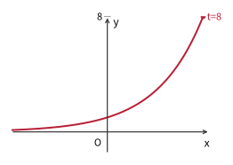
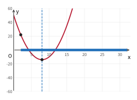
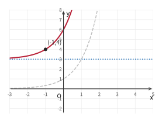
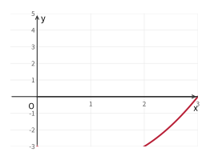

別冊章末問題の解答
1. 次の計算をせよ。 \[125^{\dfrac{2}{3}}\div 25^{- \dfrac{1}{2}}\times 5^{-1}\]
底を素数 \(5\) にそろえる
\[\begin{aligned}125^{\dfrac{2}{3}}&=\left(5^{3}\right)^{\dfrac{2}{3}}=5^{2}\\ 25^{- \dfrac{1}{2}}&=\left(5^{2}\right)^{- \dfrac{1}{2}}=5^{-1}\\ 5^{-1}&=\left(5^{1}\right)^{-1}=5^{-1}\end{aligned}\]指数の計算に直す
\(a^m\times a^n=a^{m+n},\quad a^m\div a^n=a^{m-n}\)。
\[5^{2-(-1)+(-1)}=5^{2}\]値を求める
\[5^{2}=25\]（例題1の型）
【答案】
\[25\]答
2. \(x>0\) のとき、\(3^x+3^{-x}=\dfrac{82}{9}\) である。(1) \(3^{2x}+3^{-2x}\) (2) \(3^{3x}+3^{-3x}\) (3) \(3^x-3^{-x}\) の値を求めよ。
\(t=3^x\) とおく
\(3^{-x}=\dfrac1{3^x}=\dfrac1t\)。\(x>0\) で \(3>1\) より \(t>1\)。条件は \(t+\dfrac1t=\dfrac{82}{9}\)。
\(3^{2x}+3^{-2x}\)
\[t^2+\dfrac1{t^2}=\left(t+\dfrac1t\right)^2-2=\left(\dfrac{82}{9}\right)^2-2=\dfrac{6562}{81}\]\(3^{3x}+3^{-3x}\)
\[t^3+\dfrac1{t^3}=\left(t+\dfrac1t\right)^3-3\left(t+\dfrac1t\right)=\left(\dfrac{82}{9}\right)^3-3\cdot\dfrac{82}{9}=\dfrac{531442}{729}\]\(3^x-3^{-x}\)
\(\left(t-\dfrac1t\right)^2=\left(t+\dfrac1t\right)^2-4=\dfrac{6400}{81}\)。\(t>1\) より \(t-\dfrac1t>0\)。
\[t-\dfrac1t=\sqrt{\dfrac{6400}{81}}=\dfrac{80}{9}\]（例題2の型）
【答案】
\[\text{(1) }\dfrac{6562}{81}\quad \text{(2) }\dfrac{531442}{729}\quad \text{(3) }\dfrac{80}{9}\]答
3. 方程式 \(2^{2x}-62^{x}-16=0\) を解け。
\(t=2^x\) とおく
\(2^{2x}=\left(2^x\right)^2=t^2\)。指数関数は常に正なので \(t>0\)。
\[t^{2} - 6 t - 16=0\]\(t\) の2次方程式を解く
\[(t-8)(t+2)=0\ \Rightarrow\ t=8,\ -2\]\(t>0\) に合うものを選ぶ
\(t=-2\) は \(t>0\) に合わない。
採用するのは \(t=8\)。
\(t=2^x\) のグラフ。\(t>0\) の側にしか値がない（\(t\leqq0\) には届かない）。

\(x\) を求める
\(2^x=8\ \Rightarrow\ x=3\)
（例題3の型）
【答案】
\[x=3\]答
4. 不等式 \(2^{x^{2} + 6 x + 3}\geqq4^{x}\) を解け。
底をそろえる
\(4=2^{2}\) なので、右辺は
\[4^{x}=\left(2^{2}\right)^{x}=2^{2 x}\]底の大小で不等号の向きを決める
底 \(2\) は 1 より大きい。指数の大小と不等号の向きは同じ。
\[x^{2} + 6 x + 3\geqq2 x\]2次不等式を解く
\[x^{2} + 4 x + 3\geqq0\]\[\left(x + 1\right) \left(x + 3\right)\geqq0\]\(x=-3,\ -1\) が境界。
\[x\leqq-3,\ -1\leqqx\]（例題4の型）
【答案】
\[x\leqq-3,\ -1\leqqx\]答
5. \(1\leqq x\leqq 5\) のとき、関数 \(y=2^{2x}-16\cdot2^x+50\) の最大値・最小値と、そのときの \(x\) の値を求めよ。
\(t=2^x\) とおいて範囲を求める
\(1\leqq x\leqq 5\) で \(2^x\) は増加するから
\[2\leqq t\leqq 32\]\(y\) を \(t\) の式にする
\[y=2^{2x}-16\cdot2^x+50=t^2-16t+50\]\[y=\left(t-8\right)^2-14\]範囲内での最大・最小
頂点 \(t=8\) は範囲内。頂点と両端の値を比べる。
\[t=2:\ y=22,\quad t=32:\ y=562,\quad t=8:\ y=-14\]\(y=t^2-16t+50\) のグラフ（太線が \(2\leqq t\leqq 32\) の範囲）。

答え（\(x\) の値に戻す）
最大値 \(562\)（\(x=5\)）、最小値 \(-14\)（\(x=3\)）。
（例題5の型）
【答案】
\[\text{最大値 }562\ (x=5),\quad \text{最小値 }-14\ (x=3)\]答
6. \(a>0\) で \(a^{\frac12}+a^{-\frac12}=7\) のとき、\(a+a^{-1},\ a^{\frac32}+a^{-\frac32},\ a^2+a^{-2}\) の値を求めよ。
2乗
\[\left(a^{\frac12}+a^{-\frac12}\right)^2=a+2+a^{-1}=49\ \Rightarrow\ a+a^{-1}=47\]
3乗
\[a^{\frac32}+a^{-\frac32}=\left(a^{\frac12}+a^{-\frac12}\right)^3-3\left(a^{\frac12}+a^{-\frac12}\right)=343-21=322\]
2乗の和
\[a^2+a^{-2}=(a+a^{-1})^2-2=2209-2=2207\]
（例題6の型）
【答案】
\[47,\ 322,\ 2207\]答
7. 連立方程式 \(2^x+2^y=20,\ 2^{x+y}=64\) を解け。
置き換え
\(u=2^x,\ v=2^y\ (u>0,v>0)\)。
\[u+v=20,\qquad uv=64\]2次方程式
\(u,v\) は \(t^2-20t+64=0\) の解。
\[(t-4)(t-16)=0\]\(x,y\) に戻す
\[(x,y)=(2,4),\ (4,2)\]
（例題7の型）
【答案】
\[(x,y)=(2,4),\ (4,2)\]答
8. \(y=3^x\) のグラフを \(x\) 軸方向に \(-1\)、\(y\) 軸方向に \(3\) だけ平行移動したグラフの方程式、漸近線の方程式、および \((0,1)\) が移る点の座標を求めよ。
平行移動
\(y=3^x\) を \(x\) 方向に \(-1\)、\(y\) 方向に \(3\) 平行移動。
\[y=3^{x+1}+3\]漸近線
漸近線は直線 \(y=3\)。

通る点
\((0,1)\) は \((-1,4)\) に移る。
（例題8の型）
【答案】
\[y=3^{x+1}+3,\ \ y=3,\ \ (-1,4)\]答
9. \(2^{\dfrac{3}{2}},\ 3^{\dfrac{5}{6}},\ 5^{\dfrac{2}{3}}\) を小さい順に並べよ。
指数をそろえる
\(2^{\dfrac{3}{2}}\)、\(3^{\dfrac{5}{6}}\)、\(5^{\dfrac{2}{3}}\)。冪を\(12\) 乗して比べる。
12乗した値
\[(2^{\dfrac{3}{2}})^{12}=262144,\quad (3^{\dfrac{5}{6}})^{12}=59049,\quad (5^{\dfrac{2}{3}})^{12}=390625\]
大小
\[3^{\dfrac{5}{6}}<2^{\dfrac{3}{2}}<5^{\dfrac{2}{3}}\]
（例題9の型）
【答案】
\[3^{\dfrac{5}{6}}<2^{\dfrac{3}{2}}<5^{\dfrac{2}{3}}\]答
10. 方程式 \(4^x-2\cdot2^x-3=0\) の実数解の個数を求めよ。
置き換え
\(t=2^x>0\)。
\[t^2-2t-3=0\]正の解の個数
\(D=2^2-4\cdot-3=16\)、解の和 \(2\)、積 \(-3\)（）。

個数
\(t\) の正の解 \(1\) 個。\(t\) 1つにつき \(x\) は1つ。
（例題10の型）
【答案】
\[1\]答